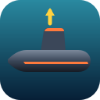

Depth Strike
Missiles up. Torpedoes sideways. Sink the whole fleet!
A free submarine battle game for your browser
Take command of an attack submarine and fight a whole navy from below. Fire missiles straight up to sink warships and shoot down fighter jets and helicopters, and send torpedoes sideways at enemy submarines. Jets drop bombs and destroyers drop depth charges: blast them out of the water before they reach you, or dive to the deep lane to dodge. Only one missile and one torpedo can be in the water at a time, so every shot counts.
Waves, upgrades and a boss
Survive an air raid, a surface fleet and a submarine hunt, then sink the giant enemy aircraft carrier by hitting its glowing hatches. After every wave you pick an upgrade: twin missiles, homing torpedoes, a faster engine and more. Coins from each battle buy lasting upgrades for your sub in the shipyard.
How to play
- Phone or tablet: tap MISSILE or TORPEDO to fire. Drag to move, swipe up or down to change depth.
- Computer: arrow keys or A/D to move, Up/Down or W/S to change depth, Space for a missile, X for a torpedo, Esc to pause.
Free to play. No download, no sign-up.
A game by Orbit Fox Studio · Also try Sunset Getaway and Neon Swarm